Open-Source Community Maintained by PAI
PowerAgent is PAI’s open-source community for agentic intelligence in power systems, spanning foundation models, tool interfaces, and workflow design.
poweragent.seas.harvard.edu
Research
PAI studies how large-scale AI systems should be scheduled, powered, modeled, and governed, linking LLM runtimes and data center operations to grid intelligence and public policy.
Focus areas
Open-Source Community Maintained by PAI
PowerAgent is PAI’s open-source community for agentic intelligence in power systems, spanning foundation models, tool interfaces, and workflow design.
poweragent.seas.harvard.eduProject 01
TRAIL recycles intermediate transformer embeddings to predict remaining sequence length and preempt requests in a way that cuts latency and time-to-first-token.
Read paper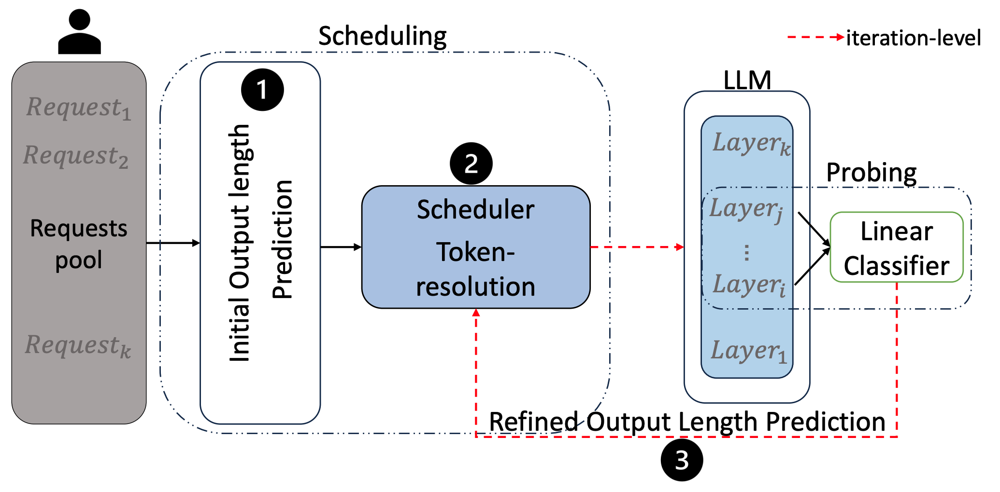
Project 02
This work schedules API-augmented requests by forecasting memory demand over time and choosing request-specific KV cache handling during external calls.
Read paper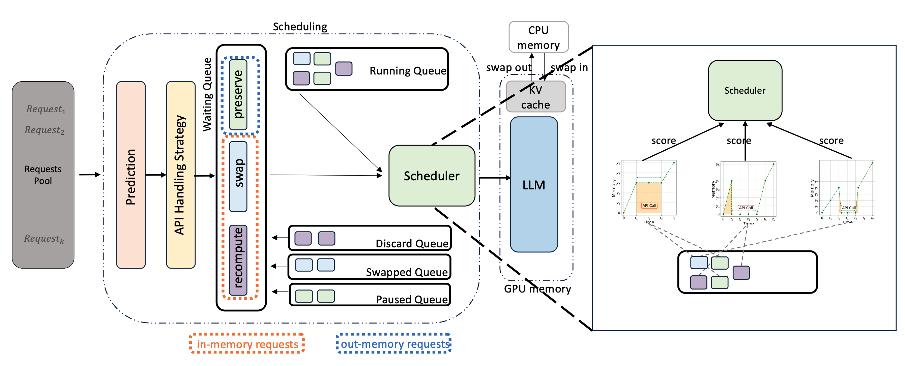
Project 03
Lightweight probes on layer activations identify promising reasoning branches early so the system can stop dead ends and spend compute on higher-value paths.
View preprint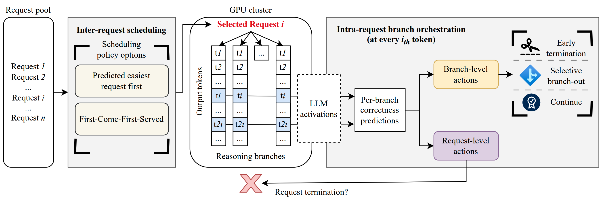
Project 04
A plug-and-play routing algorithm adapts to gate score distributions in MoE inference to reduce load imbalance and improve throughput without retraining.
View preprint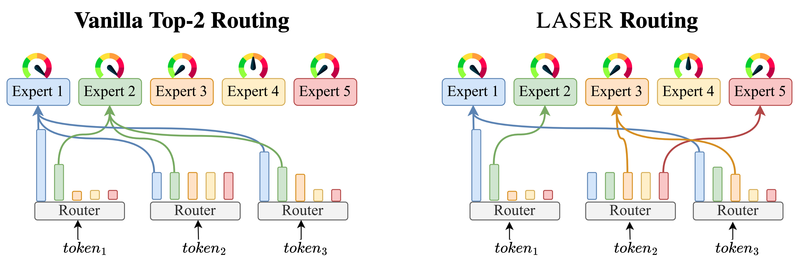
Project 05
TrainMover keeps training productive through interruptions with standby machines, delta-based communication, and shadow iterations that enable second-level recovery.
View preprint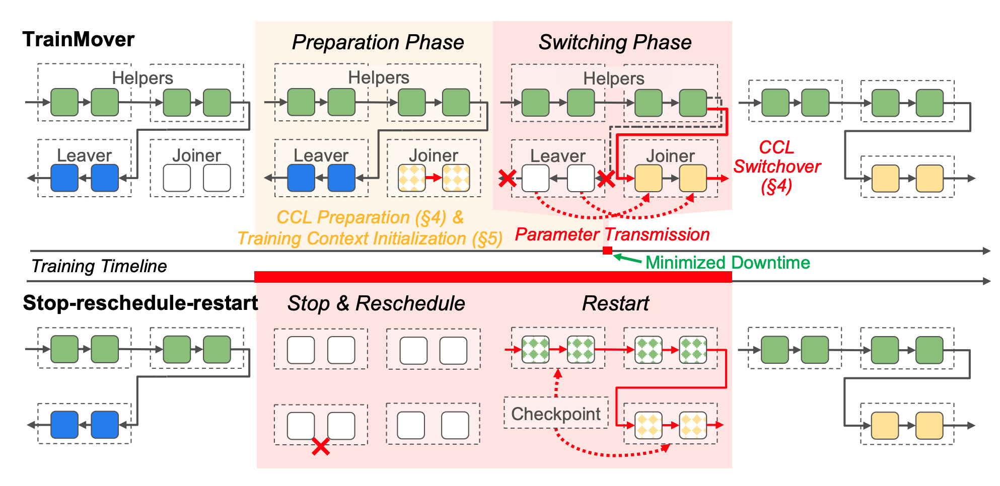
Project 06
This ongoing project aligns Mixture-of-Experts inference settings with grid supply by co-tuning software and hardware configurations for power-aware operation.
Ongoing research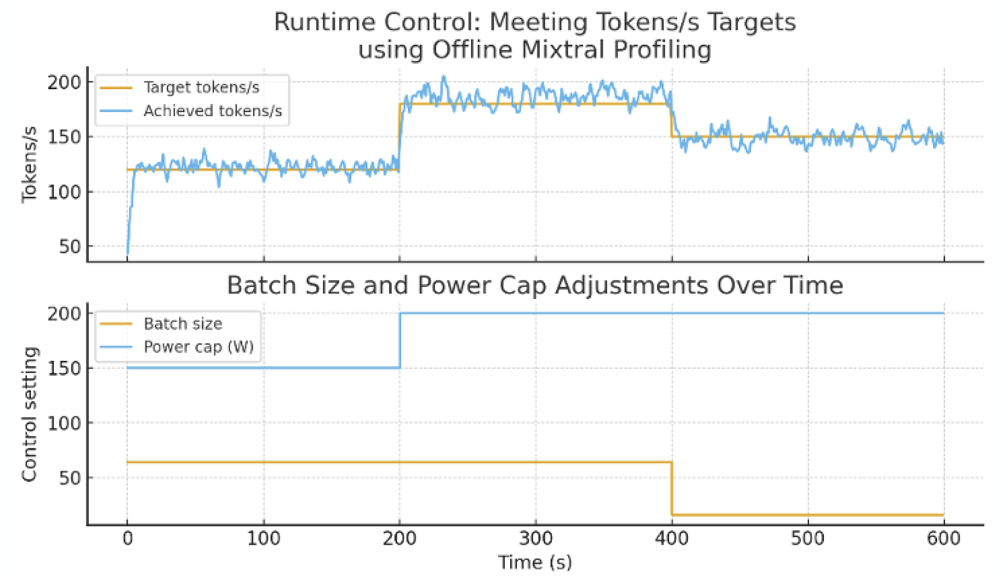
Project 07
This project studies whether grid-connected data centers can trigger sub-synchronous resonance and develops data-driven control around power-factor-correction converters.
View preprint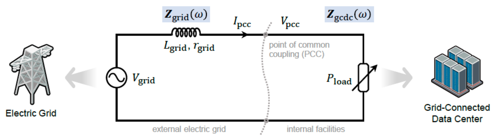
Project 08
LILAD learns adaptive dynamics models and Lyapunov certificates together so new systems can be identified quickly while preserving stability guarantees.
View preprint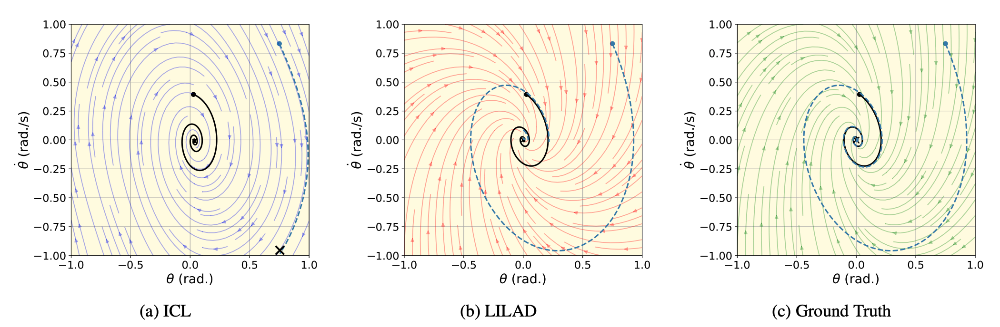
Project 09
This work frames foundation models as both a new source of grid stress and a tool for smarter energy management across data centers, operations, and markets.
Read article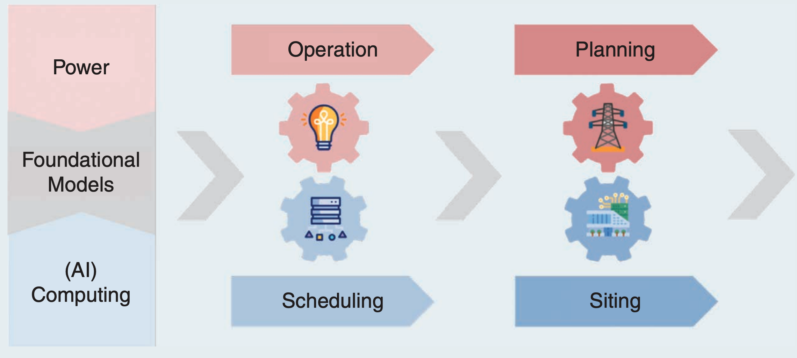
Project 10
PowerAgent outlines a roadmap for context-aware AI assistants in power systems built on foundation models, standardized tool interfaces, and structured workflows.
Read article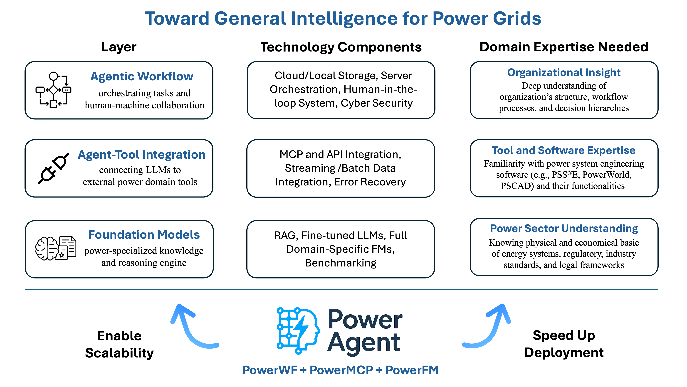
Project 11
PowerMamba combines state-space modeling and deep learning to forecast multivariate power-system time series while incorporating high-resolution external forecasts.
Read article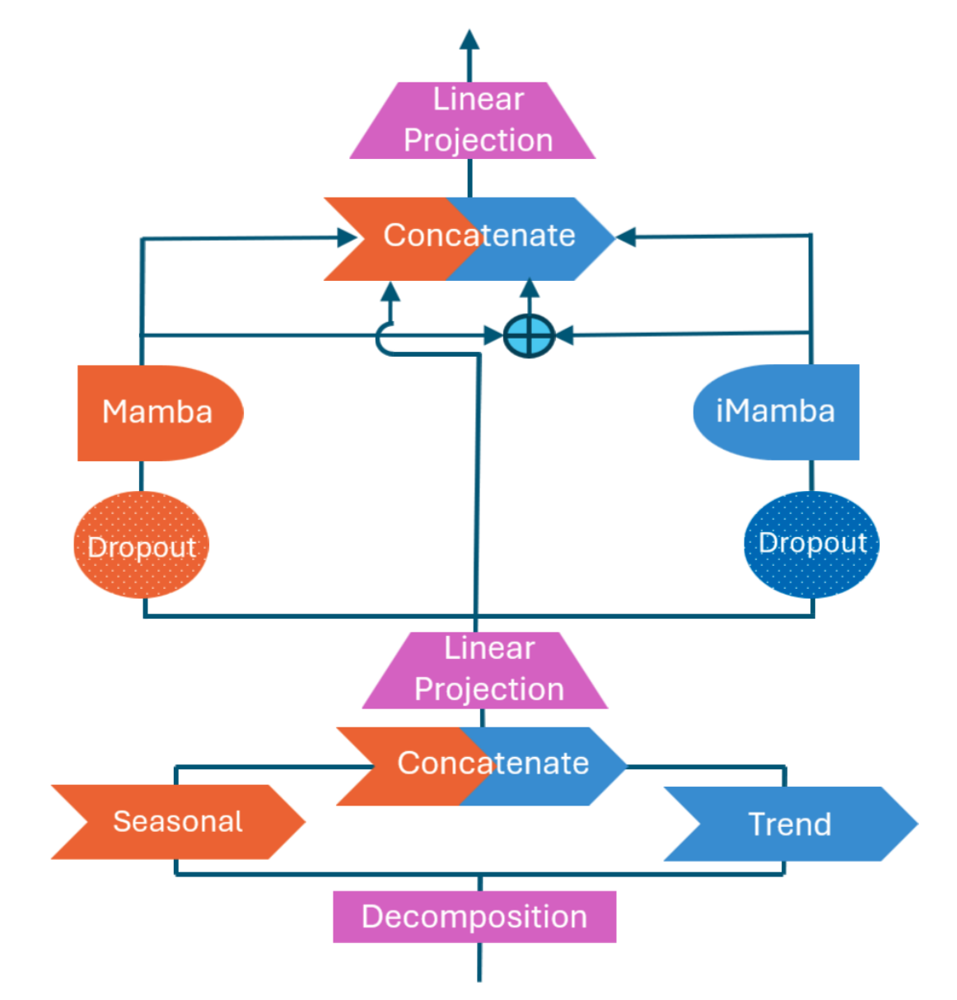
Project 12
This study examines whether data scaling laws can produce multi-task, cross-timescale foundation models for power systems that generalize to unseen operations.
View preprint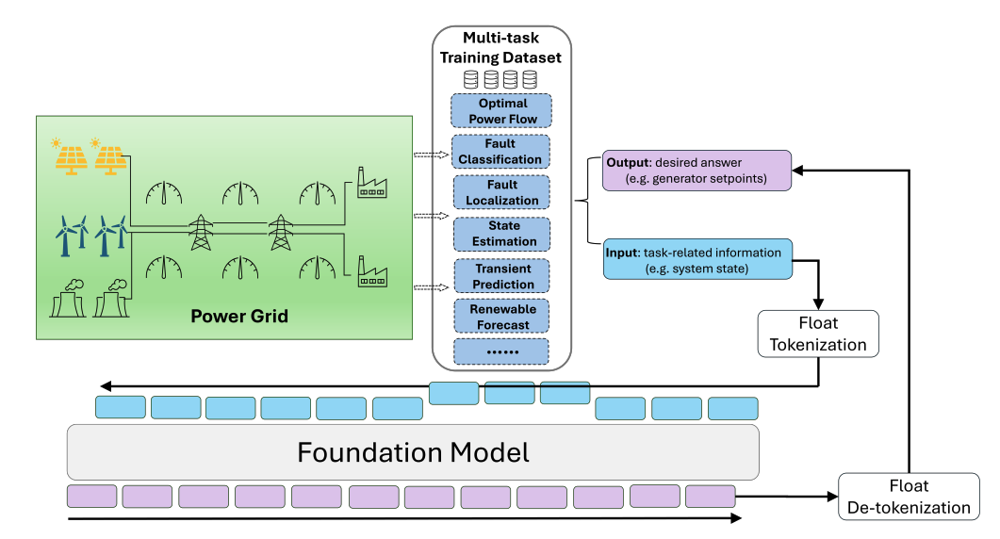
Project 13
This policy brief analyzes the surge in U.S. data-center electricity demand and identifies engineering and regulatory strategies for more flexible, equitable grid expansion.
Read policy brief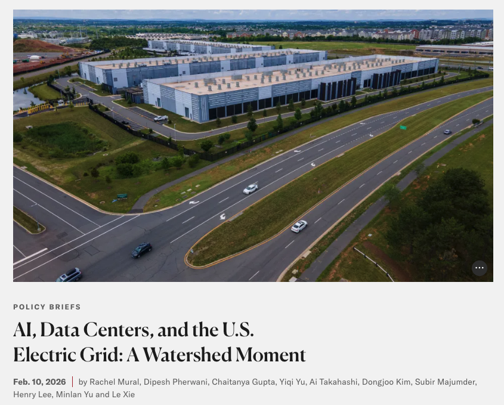